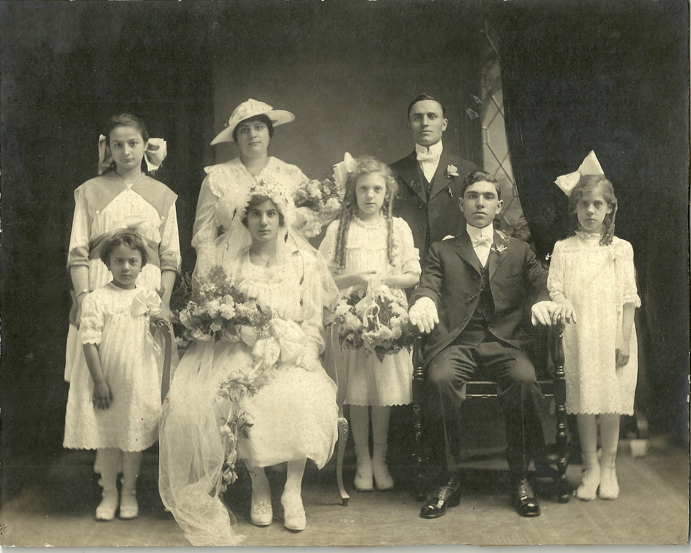

PROGETTO: Radici forti, frutti buoni
La storia di La Leonessa e di Monteleone di Puglia
Nell'aprile 2024, io e mio figlio Daniel abbiamo intrapreso un viaggio alle radici: un tour genealogico nei luoghi di nascita dei miei nonni materni italiani, a Monteleone di Puglia e a Baranello (Molise), accompagnati da Stefano Ammirati di Southern Italy Travel. A Baranello abbiamo incontrato discendenti ancora viventi della famiglia di mio nonno: ci hanno accolto con un calore commovente, ci hanno raccontato storie di famiglia e ci hanno mostrato la grande casa in pietra dove mio nonno era nato, affacciata sulle splendide montagne del Matese.
A Monteleone di Puglia, il Sindaco Giovanni Campese ci ha guidati nella storia del paese: ci ha presentato immigrati e rifugiati che oggi vivono nelle strutture di accoglienza, e ci ha raccontato la trasformazione straordinaria di Monteleone in un borgo di pace, ospitalità e non violenza. A un certo punto mi ha guardato negli occhi e mi ha detto:
"Le loro radici forti hanno prodotto buoni frutti. Tua nonna è partita, ma tu sei tornato. Ti accogliamo come Monteleonese. Forse, un giorno, potrai realizzare per noi una scultura, da esporre in modo permanente nel nostro paese."
Dopo quel tour ho visitato Assisi e poi sono andato a trovare un amico a Carrara. Sul volo di ritorno verso il Connecticut mi sono sentito travolto da gratitudine ed emozione: da lì è nata un'ondata creativa che non si è più fermata. Ho scritto e autopubblicato Strong Roots, Good Fruit, una novella grafica fantasy ispirata a questa storia; ho creato due album di musica digitale; e ho progettato una scultura digitale 3D di La Leonessa, poi scolpita in marmo Carrara Bianco Venato dal maestro artigiano Massimo Baldoni.
Il mio libro, più che un semplice memoir, rende omaggio al coraggio delle donne di Monteleone, al dolore dell'emigrazione e alla rinascita del paese come simbolo di pace — raccontando tutto attraverso una leggenda fantastica: una leonessa guardiana che compare nei momenti decisivi della sua storia. La scultura La Leonessa è il mio dono a questo piccolo paese e alla comunità di monteleonesi emigrati nel mondo. È dedicata a mia nonna Assunta (Susan), la cui presenza vive, discreta ma potente, nel racconto, nella musica, nella scultura e nei miei ricordi.
Mia nonna materna Maria Assunta Capobianco (1900–1984) nacque a Monteleone di Puglia, figlia di Rocco Capobianco (1863–1941) e Maria Maddalena Casullo (1863–1909). Rocco era calzolaio; i suoi genitori erano Giovanni Capobianco e Maria Amata Nunno. I genitori di Maria Maddalena erano Lorenzo Casullo e Marianna Pozzulo, anche loro di Monteleone.
Nel 1906, Assunta e la sua famiglia emigrarono a Welland, in Canada, e poco dopo a Little Falls e Herkimer, nello Stato di New York (USA). Mi raccontava spesso che, a Monteleone, viveva in una casa di pietra fredda, quasi una grotta, e che ogni giorno lei e sua madre andavano a prendere l'acqua risalendo un sentiero ripido da una fontana alimentata da sorgente. Ritrovare oggi quella casa in rovina, bere la stessa acqua limpida e ripercorrere quella salita faticosa mi ha commosso fino alle lacrime.
Nel 1917 Assunta sposò mio nonno Angelo Gualtieri (1893–1973), nato a Baranello (Molise) ed emigrato a Herkimer nel 1910. Il loro primo figlio, mia madre Maria Gualtieri (1918–2005), nacque a Herkimer. In seguito la famiglia si trasferì nell'area di Cleveland, Ohio. Nel 1934 i miei nonni adottarono nomi americanizzati, Susan e Charles Wills, e vissero con noi quando io crescevo in un sobborgo di Cleveland.
Sebbene mio padre, Steve Kukla Jr., fosse di origine slovacca, la nostra casa era profondamente italoamericana. Aiutavo mio nonno a scavare fossi, posare mattoni e pigiare l'uva per fare il vino; con mia nonna raccoglievo cicoria e tarassaco, arrostivo castagne e preparavo il sugo di pomodoro e i pranzi delle feste. Loro parlavano italiano tra loro, perciò io non ho mai imparato la lingua e, per molti anni, non ho conosciuto davvero la terra da cui provenivano.

M. Assunta Capobianco & Angelo Gualtieri — Matrimonio, Herkimer, NY USA, 1917

La Leonessa — marmo Carrara Bianco Venato
Su due zampe posteriori —
una postura di ferma determinazione.
Sguardo dal fuoco dell'intento —
chiarezza sicura per guidare e illuminare il cammino.
Zampa sinistra alta, artigli pronti a colpire —
segno di difesa e forza.
Ma la zampa destra tesa, palmo aperto, artigli retratti —
segno di accoglienza, pace, compassione e carità.
E un volto fiero e fauci ringhianti —
coraggiosa, per ruggire la verità.
Con profonda gratitudine verso chi ha reso possibile questo percorso:
- Sebastiano Maraschiello, attuale sindaco, Monteleone di Puglia
- Giovanni Campese, ex sindaco, Monteleone di Puglia, Italia
- Massimo Baldoni, maestro artigiano del marmo, Luni, Italia
- Stefano Ammirati, genealogista, Southern Italy Travel, Abruzzo, Italia
- Antonio Mazzoni, maestro artigiano di utensili diamantati, Carrara, Italia
- Immacolata Scelzo, ex consigliere comunale, Monteleone di Puglia, Italia
In collaborazione con:
- Rosa Pollastrone, Monteleone di Puglia, Italia
- Lina e Antonio Colangelo, Monteleone di Puglia, Italia
- Daniela Pucillo, Assessora alla Cultura, Monteleone di Puglia, Italia
- Cristina Capobianco, mia cugina, Toronto, Canada
- Paolo Schiavone, Schiavone Fotografia, Stornara, Italia
Steven G. Kukla e sua moglie Cynthia vivono a Litchfield, Connecticut, e hanno due figli maschi e una figlia. Steven è grato di poter dedicare le sue giornate alle sue passioni: famiglia, viaggi, yoga, scrittura, escursioni, scultura figurativa su pietra e collezionismo di minerali.

Steven G Kukla
Testo
Slide
Video
La mia intenzione è portare avanti questo progetto nei prossimi anni: vorrei realizzare un trailer animato della storia e sviluppare un'esperienza immersiva e interattiva per chi osserva la statua La Leonessa. Credo che la storia di Monteleone di Puglia meriti di essere conosciuta da tutti e, chissà, un giorno potrebbe diventare un film d'animazione, uno spettacolo teatrale o un'operetta.
Questo progetto è dedicato alla memoria di mia nonna e alla mia eredità italiana; spero possa incoraggiare altri discendenti della diaspora a ritrovare e onorare le proprie radici.
PROJECT: Strong Roots, Good Fruit
The Story of La Leonessa and Monteleone di Puglia
In April 2024, my son Daniel and I embarked on a genealogy tour of the birthplaces of my maternal Italian grandparents, in Monteleone di Puglia and Baranello (Molise), escorted by Stefano Ammirati of Southern Italy Travel. In Baranello we met living descendants of my grandfather's family, who welcomed us warmly, shared stories, and showed us the large stone house where my grandfather was born, overlooking the magnificent Matese Mountains.
In Monteleone di Puglia, Mayor Giovanni Campese shared Monteleone's detailed history, introduced us to immigrants and refugees now living in village reception facilities, and described its amazing transformation as a village of peace, acceptance and non-violence. Then he looked deeply into my eyes and said:
"Their strong roots made good fruit. Your grandmother left, but you returned. We accept you back as Monteleonese. Perhaps you can one day make us a sculpture, for permanent display in our village."
After these tours, I visited Assisi and then visited a friend in Carrara. On my flight home to Connecticut, I was overwhelmed with deep gratitude and emotion, which unleashed a creative burst of activity. I wrote and self-published Strong Roots, Good Fruit, a historically-inspired fantasy graphic novella, created two digital music albums, and designed a 3D digital sculpture of La Leonessa, which was carved in Carrara Bianco Venato marble by master artisan Massimo Baldoni.
Far more than a memoir, my book honors the courage of Monteleone's women, the anguish of emigration, and celebrates the village's rebirth as a beacon of peace — told through the fantasy legend of a guardian lioness who intervenes at key moments in its history. The sculpture La Leonessa is my gift to this small village and its worldwide Monteleone emigrant community, and is dedicated to my grandmother Assunta (Susan), whose spirit quietly lives within my story, music, sculpture and in my memories.
My maternal grandmother Maria Assunta Capobianco (1900–1984) was born in Monteleone di Puglia, daughter of Rocco Capobianco (1863–1941) and Maria Maddalena Casullo (1863–1909). Rocco was a shoemaker; his parents were Giovanni Capobianco and Maria Amata Nunno. Maria Maddalena's parents were Lorenzo Casullo and Marianna Pozzulo, also of Monteleone.
In 1906, Assunta and her family emigrated to Welland, Canada, and soon after to Little Falls and Herkimer, New York, USA. She told me she lived in a cold, cave-like stone home in Monteleone and carried water each day with her mother, up a steep path from a spring-fed fountain. Seeing her home now lying in ruins, tasting that same sweet fountain water, and recognizing the challenge of the steep climb brought many tears to my eyes on my tour.
In 1917, Assunta married my grandfather Angelo Gualtieri (1893–1973), born in Baranello, Molise, who emigrated to Herkimer in 1910. Their first child, my mother Maria Gualtieri (1918–2005), was born in Herkimer. The family later moved to the Cleveland, Ohio area. In 1934 my grandparents adopted Americanized names Susan and Charles Wills, and they lived with us when I was growing up in a suburb of Cleveland, Ohio.
Although my father Steve Kukla Jr. was of Slovak heritage, our household was Italian-American. I helped my grandfather dig ditches, lay bricks, and stomp grapes to make his wine, and I worked with my grandmother to gather dandelion greens and chicory, roast chestnuts, and prepare tomato sauce and holiday feasts. They spoke Italian privately, so I never learned the language and knew nothing about their homeland.
M. Assunta Capobianco & Angelo Gualtieri — 1917 Wedding, Herkimer, NY USA
La Leonessa — Carrara Bianco Venato marble
On hind feet —
a Stance of firm resolve.
Gaze of fiery aim —
confident clarity, to lead & light the way.
Left arm high, claws ready to strike —
a sign of defense & strength.
But Right arm extended, open paw, claws retracted —
a welcome sign of acceptance, peace & non-violence.
And a fearsome Face & snarling Jaws —
brave, to roar the truth.
With deep gratitude to those who made my project possible:
- Sebastiano Maraschiello, Current Mayor, Monteleone di Puglia
- Giovanni Campese, Former Mayor, Monteleone di Puglia, Italy
- Massimo Baldoni, Master craftsman of marble carving, Luni, Italy
- Stefano Ammirati, Genealogist, Southern Italy Travel, Abruzzo, Italy
- Antonio Mazzoni, Master craftsman of diamond abrasive tools, Carrara, Italia
- Immacolata Scelzo, Former Municipal Councilor Monteleone di Puglia, Italia
In collaboration with:
- Rosa Pollastrone, Monteleone di Puglia, Italia
- Lina and Antonio Colangelo, Monteleone di Puglia, Italia
- Daniela Pucillo, Assessora alla Cultura, Monteleone di Puglia, Italia
- Cristina Capobianco, my cousin, Toronto, Canada
- Paolo Schiavone, Schiavone Fotografia, Stornara, Italy
Steven G Kukla and his wife Cynthia live in Litchfield, Connecticut and have 2 boys and a girl. He is grateful to fill his days with his passions: family, travel, yoga, writing, hiking, figurative stone carving, and mineral collecting.
Steven G Kukla
Text
Slides
Videos
My intent is to continue my project over the next few years, hopefully to create an animated movie trailer of the story and develop an immersive, interactive experience for viewers of the La Leonessa statue. I believe the story of Monteleone di Puglia needs to be shouted from the mountaintops, and perhaps one day it may become an animated film, theatrical play or operetta.
My project is dedicated to the memory of my grandmother and my Italian heritage, and hopefully encourages other descendants of diaspora immigrants to reconnect with their roots.